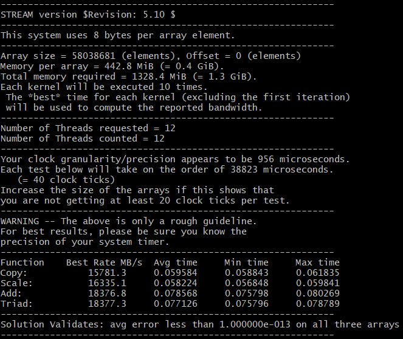
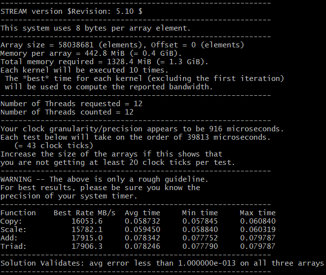
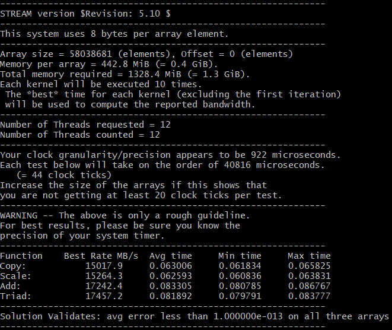
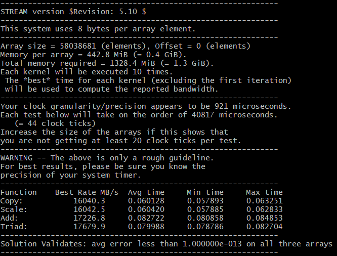
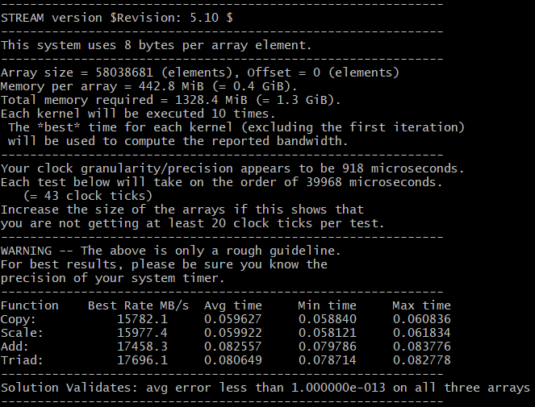
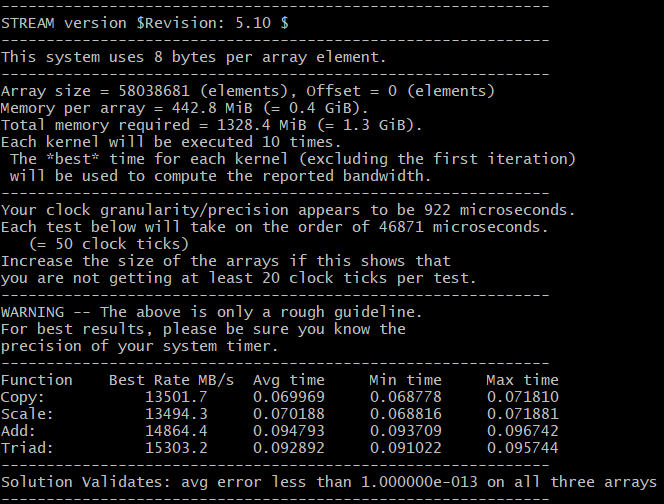

Stream内存测试工具
| 组名 | 描述 | 解析 |
|---|---|---|
| Copy | 复制操作 | 从内存单元中读取一个数，并复制到其他内存单元中，两次访问内存操作 |
| Scale | 乘法操作 | 从内存单元中读取一个数，与常数相乘，得到的结果写入其他内存单元，两次访问内存操作 |
| Add | 矢量求和 | 从两个内存单元中分别读取两个数，相加后，得到的结果写入另一个内存单元中，三次访问内存操作 |
| Triad | 复合矢量求和 | 先从内存中读取一个数，与一个常数相乘得到一个乘积，然后从另一个内存单元中读取一个数与刚才乘积结果再相加，得到的结果写入内存。三次访问内存操作 |
| name | kernel | bytes/iter | FLOPS/iter |
|---|---|---|---|
| Copy | a(i) = b(i) | 16 | 0 |
| Scale | a(i) = q*b(i) | 16 | 1 |
| Sum | a(i) = b(i) + c(i) | 24 | 1 |
| Triad | a(i) = b(i) + q*c(i) | 24 | 2 |
| 参数 | 描述 | 值 |
|---|---|---|
| -O3 | 编译优化级别 | 1-3 |
| -fopenmp | 启用多线程 | |
| -DNTIMES | 测试次数，多次则取平均值 | int |
| -DSTREAM_ARRAY_SIZE | 测试数组大小，结果取整 | (cpu3级缓存大小*MB)*1024**1024*4.1(cpu路数/8) |
测试编译优化级别：1
数组大小：(9*MB)*1024*1024*4.1*(12/8)
测试次数：10
gcc -O1 -fopenmp -DSTREAM_ARRAY_SIZE=58038681 -DNTIMES=10 stream.c -o stream
测试结果： 
测试编译优化级别：2
多线程：开启
数组大小：(9*MB)*1024*1024*4.1*(12/8)
测试次数：10
gcc -O2 -fopenmp -DSTREAM_ARRAY_SIZE=58038681 -DNTIMES=10 stream.c -o stream
测试结果： 
测试编译优化级别：3
多线程：开启
数组大小：(9*MB)*1024*1024*4.1*(12/8)
测试次数：10
gcc -O3 -fopenmp -DSTREAM_ARRAY_SIZE=58038681 -DNTIMES=10 stream.c -o stream
测试结果： 
对照参数：多线程：关闭
测试编译优化级别：1
数组大小：(9*MB)*1024*1024*4.1*(12/8)
测试次数：10
gcc -O1 -DSTREAM_ARRAY_SIZE=58038681 -DNTIMES=10 stream.c -o stream
测试结果： 
对照参数：多线程：关闭
测试编译优化级别：2
数组大小：(9*MB)*1024*1024*4.1*(12/8)
测试次数：10
gcc -O2 -DSTREAM_ARRAY_SIZE=58038681 -DNTIMES=10 stream.c -o stream
测试结果： 
测试编译优化级别：3
数组大小：(9*MB)*1024*1024*4.1*(12/8)
测试次数：10
gcc -O3 -DSTREAM_ARRAY_SIZE=58038681 -DNTIMES=10 stream.c -o stream
测试结果： 